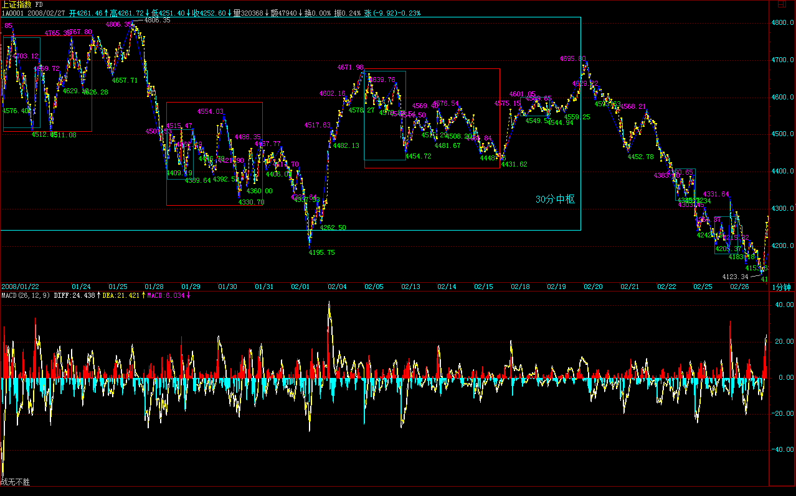
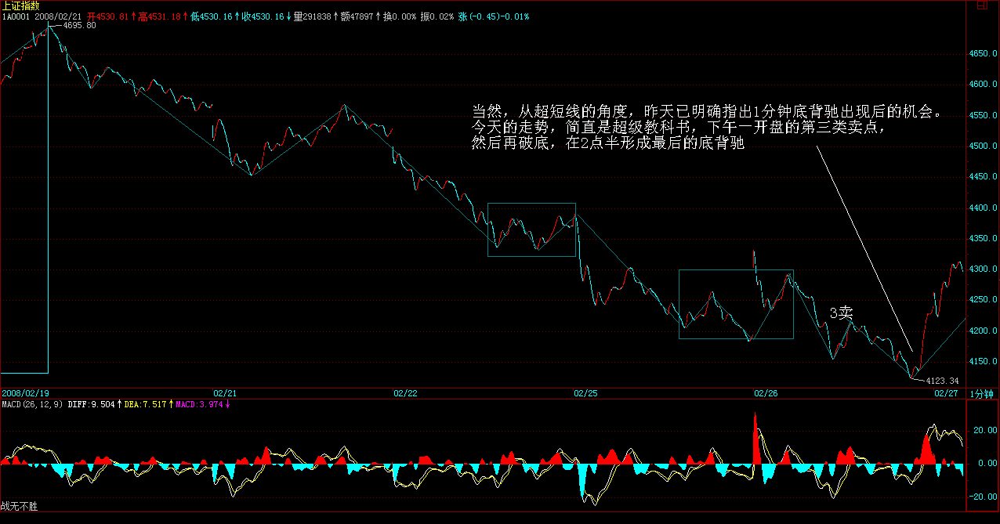
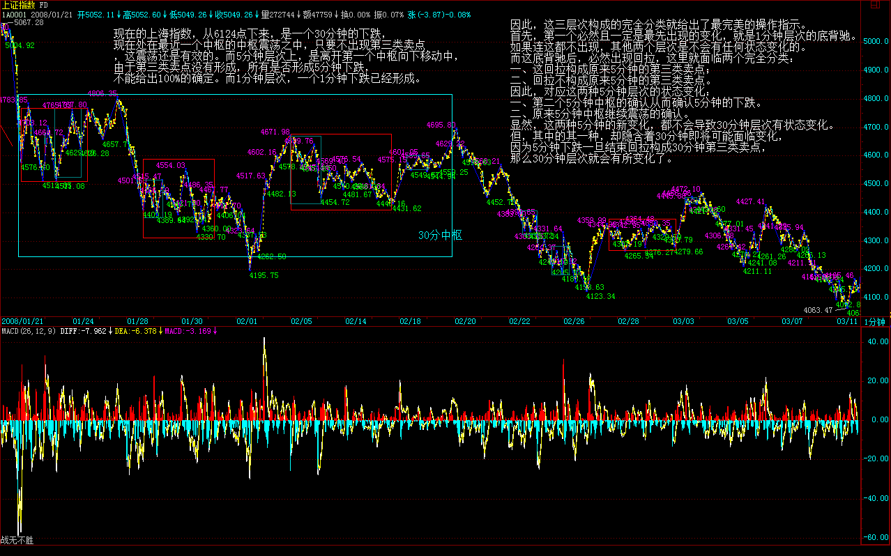
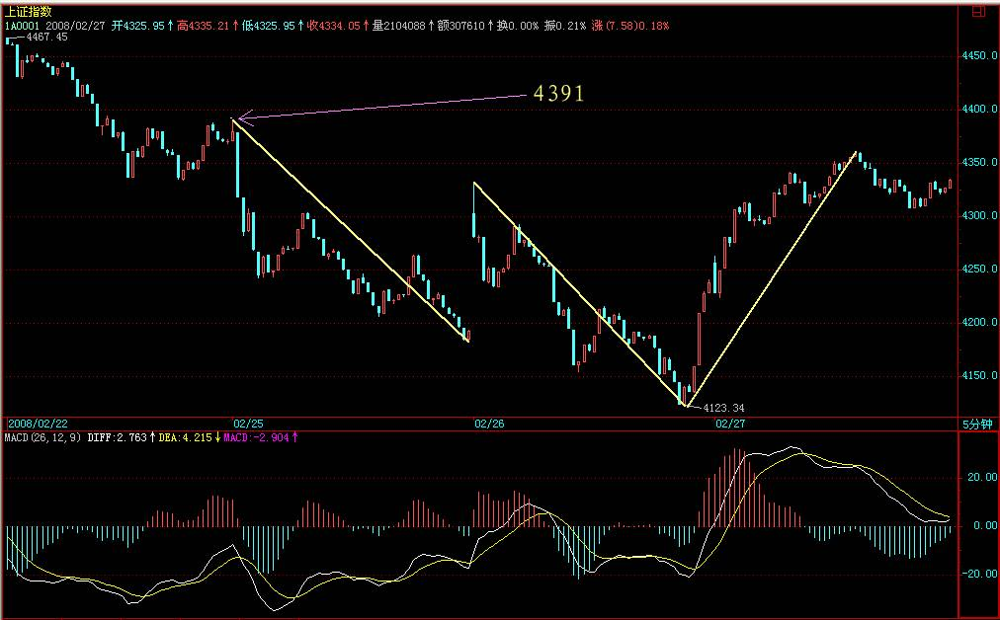
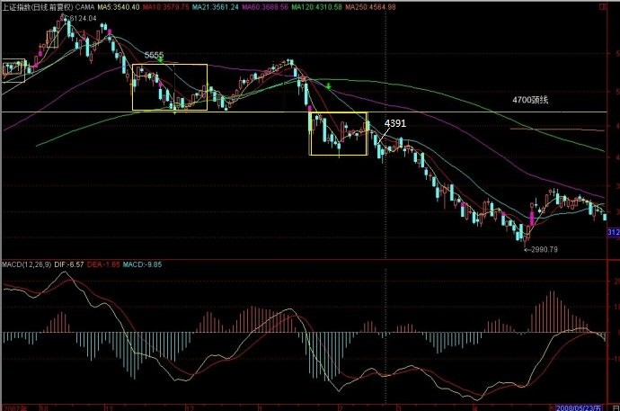
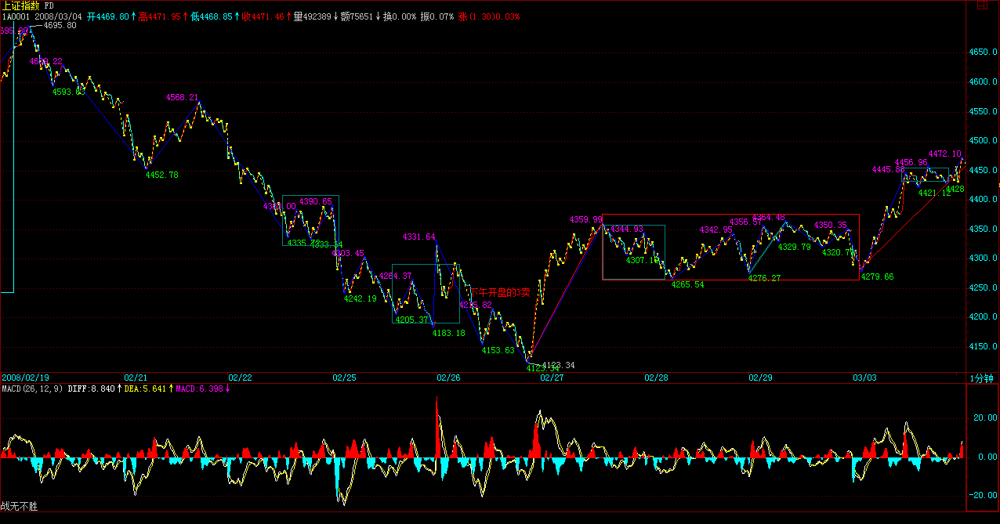
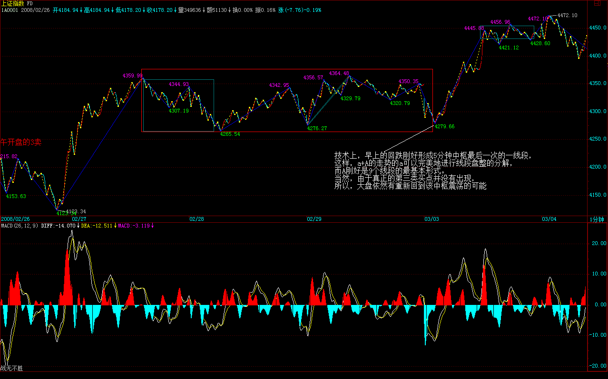
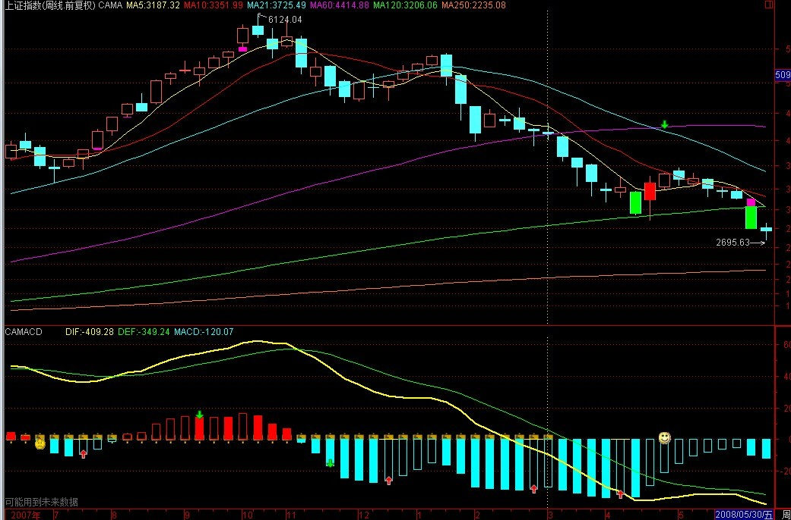
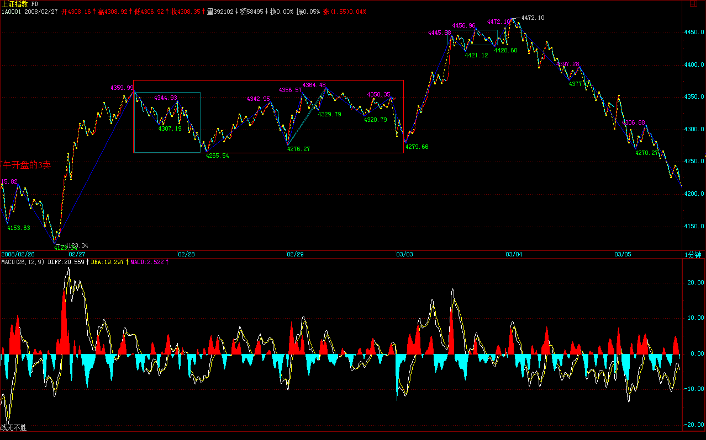

|
 |
教你炒股票100：中医、兵法、诗歌、操作3
(2008-02-25 16:32:23)
只要是中国人，都知道，诸葛亮曾因为一场雨没把司马懿给灭了，这虽然是小说情节，但还是有分析意义的。打仗，必须要把尽可能的情况完全分类，用火攻，那当然最怕下雨，诸葛亮草船借箭的时候算天气算得那么准，怎么这次就没好好算？此外，既然诸葛亮知道这一次不搞死司马懿就没机会了，那怎么不把所有的可能都想到？其实，就算有雨，如果在峡谷外再安排点兵马，那司马懿也逃不掉了。
当然，其实并不是诸葛亮真想不到，而是历史上司马懿就没被诸葛亮干掉，写小说的总不能编得太离谱了，只好把这一切归于天命，其实，在现实中，所谓的天命，都是在人谋之中，只是你的谋划是否完全，另外，一个很重要的是，完全的谋划是否超越你的能力。
股票比战争要简单得多，因为，对于股票来说，完全的分类或谋划，基本不存在超越能力的问题，只是买卖多少的问题，有能力就多点，没能力就少点，不存在某种分类完全不能执行的情况。因此，所有的重点，都在这完全的分类上了。
这点，前面已经反复说过。但完全的分类，不是单层次的，一定也必须是多层次的。本ID的理论最重要的特点之一，就是自然给出了分类的层次，也就是不同的自然形成的级别。不同的级别，有不同的完全分类，而综合起来，就有了一个立体的完全分类的系统，这才是我们的操作必须依赖的。
当然，对于小资金，你可以完全用一个层次的完全分类进行操作，但对于大一点的资金，这是不合适的。例如，30、5、1分钟的三个层次所构成的系统里，任何的当下状态，都对应着不同层次完全分类中的一个现实状态。
例如，现在的上海指数，从6124点下来，是一个30分钟的下跌，现在处在最近一个中枢的中枢震荡之中，只要不出现第三类卖点，这震荡还是有效的。而5分钟层次上，是离开第一个中枢向下移动中，由于第三类卖点没有形成，所有是否形成5分钟下跌，不能给出100%的确定。而1分钟层次，一个1分钟下跌已经形成。
（娇：此处5分中枢借用扩展30分中枢内5分中枢）


因此，这三层次构成的完全分类就给出了最完美的操作指示。首先，第一个必然且一定是最先出现的变化，就是1分钟层次的底背驰。如果连这都不出现，其他两个层次是不会有任何状态变化的。而这底背驰后，必然出现回拉，这里就面临两个完全分类：一、这回拉构成原来5分钟的第三类卖点；二、回拉不构成原来5分钟的第三类卖点。因此，对应这两种5分钟层次的状态变化：一、第二个5分钟中枢的确认从而确认5分钟的下跌。二、原来5分钟中枢继续震荡的确认。
（娇注：实际走势出现5分3卖后扩展5分中枢并且碰到前5分中枢。30分中枢震荡，向下离开为1分趋势，向上为5分盘背。）
显然，这两种5分钟的新变化，都不会导致30分钟层次有状态变化。但，其中的其一种，却隐含着30分钟即将可能面临变化，因为5分钟下跌一旦结束回拉构成30分钟第三类卖点，那么30分钟层次就会有所变化了。

因此，在当下的状态，我们可以很逻辑很严密地推算出后面下一步的系统层次的状态变化，那么这个变化的可能结果，都对应着你可以承受的范围。因此，你只需要把自己可以承受的能力与之相匹配，给出相应的参与资金比例，相应的仓位控制，就可以自如地参与其中了。
例如，你没法应付可能出现的第三类卖点的情况，那么，你就别参与了，为什么？因为这第三类卖点是一个可能的选项。反之，如果你对所有的可能都有面对的技术，那么，就可以参与这1分钟底背驰的活动了。
所以，最终还是那个问题，把市场分析好了，把情况分类好了，然后问一下自己，你有这个处理所有可能情况的能力吗？如果没有，那就算了；如果有，就上。事情就这么简单。
当然，你还可以这样，就是把仓位弄得特别小地去参与，这样，可能培养自己面对相应情况的能力，能力毕竟要干才能培养的，光说不练，那永远还是没能力。关键是知道自己干什么，而不是糊涂蛋瞎蒙就行。
无技术含量救市已审美疲劳
(2008-02-26 15:14:39)
今天的所谓救市发言，本质上一点技术含量都没有，除了表现管理层最近对市场的超级关注外，没有其他实质内容。关于恶意圈钱，并没有给出实质的限制措施。何谓根据市场的情况？难道一上5000点，平安就可以继续1600亿的圈钱？所以，这个问题不彻底解决，市场最终的上涨空间一定受到限制。
当然，从超短线的角度，昨天已明确指出1分钟底背驰出现后的机会。今天的走势，简直是超级教科书，下午一开盘的第三类卖点，然后再破底，在2点半形成最后的底背驰，如此教科书的走势，如果都不能看明白并操作，那么唯一的办法就是继续读书。
由于1分钟背驰后，最低的回升幅度就是回到最后一个中枢里，所以，明天的关键就是这升幅能否扩大。日线上，今天已经有底分型的雏形，明天只要不破底并比今天最高位高，底分型就成立，后面就是是否延伸为笔的问题，所以，技术上已经初步具备上冲的形态。
但是，目前最大的问题是，政策上需要真正的干货，而不是一些掺水的玩意。如果政策不能给于足够的真正支持，那么，就算上去，也就是继续保持大的震荡而已。
操作上还是那句话，以震荡的思路去操作，一旦上冲没力就先出来。个股上，前面提到的个股都会有所表现的，但现在的问题还是，如果没有真正的政策面支持，持续的行情的展开就有困难，而个股也只能进行线段式的震荡表现。
今天下午晚上都有会，帖子就克扣了，抱歉。
先下，再见。
4391点决定短线走势
(2008-02-27 15:19:36)
昨天说了，今天不创新低且冲上4331点就构成底分型，今天的走势也很争气地达到了最基本的目标。但是，站在严格的意义上，这不是最强的走势，因为整个底分型的上边沿在4391点，也就是前天的高点，最强的走势就是今天直接攻上这点上。

因为，底分型成立并不意味着上攻走势必然延伸为笔，关键是要站住整个底分型的上边沿，这才是技术上的关键，前面4818点、4672点之所以不能延伸为笔，就是这个原因，因此，4391点成为短线最关键的位置。
由于大盘选择了我们认为最有可能的第二种中线走势（第一种还不能完全排除），因此MACD的进一步变化就可以勾画出大盘中线的可能变化：
一、由于今天MACD的绿柱子开始收短，因此，最好的情况，就是再次放红并创出比上次更大的红柱子，这样，MACD的黄白线至少要回到0轴附近。
注意，所有真正行情的展开，都必要需要MACD的黄白线回到0轴，一旦站住0轴，行情就会展开。这是最好的走势。
二、绿柱子再次放长或放点红后再放绿柱子。

目前，大盘中线的颈线位置在4700点上下，可以给各位一个最明确的技术图象，如果能在MACD黄白线回到0轴同时大盘回到颈线，最后站住，那么突破就不可避免。当然，要完成这技术图象，还需要多方面的配合。而操作上，没必要被这干扰，只要颈线不有效突破，就可以继续按30分钟震荡去操作。
注意，之所以用MACD来描述，主要是这个指标谁都能看见，而且直观，并不是说MACD有什么特殊的地方，如果你对本ID的理论有所把握，这一切都完全没必要的。
本ID前天明确告诉有1分钟底背驰，昨天一个教科书走势，如果都不能把握，那你就面临两种选择：一、你不需要再来这里了，等你被市场再戏弄N次后再说吧；二、抓紧学习，这是最基本的技能，连这都不能把握，不学习不继续锻炼哪里有更好的办法？
那么，昨天按理论进入的人，今天的操作，在100那课程里其实也早说了。因为这后面无非面对两种情况：一、1分钟回升构成5分钟的第三类卖点；二、1分钟回升不构成5分钟的第三类卖点。无论哪种情况，都对应一个1分钟的走势类型，现在唯一需要市场去确认的，是这类型是盘整还是上涨。
今天的走势，在4331点上下形成第一个1分钟的中枢，因此，后面的走势，就是这中枢的演化，一旦这中枢能形成第三类买点，那么，构成上涨并重新回到原来5分钟震荡的几率就极大了。

操作上，就很简单，你根本不需要慌忙抛出，因为你可以根据这中枢的演化再做决定。当然，如果你的胆子特小，那最稳健的做法，就是今天下午开盘后那线段类背驰先抛出一半，（注：按照定义，这里没有线段类背）为什么？因为线段类背驰后必然形成1分钟中枢，这表明你不想全仓参加这1分钟的震荡，等其后走势确认再说。
当然，对于一般心态好的，其实没必要如此，1分钟的震荡你都受不了，那还怎么搞股票。不过，对于操作水平有一定的，其实也可以利用那线段的类背驰，进行换股操作，这是效率最高的玩法，不过这对水平要求更高，并不是每个人都可以达到的。
本ID的理论给予的操作指示都是最明确、最精确的，没有任何含糊的地方，关键是你的心态和能力，有什么的心态和能力就参与什么活动。但前提是，基本的操作和分析，你必要彻底明白。
个股还是那句话，让板块轮动起来才是王道，否则，大盘的动力将出现大的问题。
先下，再见。
穷疯浦发让大盘再陷彷徨
(2008-02-28
15:12:30)
昨天已经说了，这两天本来是大盘短线很关键的时间，也就是MACD红柱子能否再度出现的时间，这时候任何风吹草动都会让脆弱大盘受到惊吓。
今天，曾经在4672点扼杀大盘底分型延伸为笔的浦发又疯狂出招，这次的招数是横着来了，就说自己的资本充足率已经快到红线，现在就是穷疯了，400亿不行那300亿也可以，总之没钱就不行。这种强暴的逻辑，怎能不让大盘再度彷徨？
虽然，在技术上大盘顽强地没有出现昨天所说1分钟震荡的第三类卖点，依然保持了中枢震荡的局面，但这种变化，必然让市场心理再次出现波折。
今天支持大盘没走出真正下跌的，无非是关于印花税将要修改的传闻，因此，今后几天，市场心理将在这种传闻与圈钱压力下挣扎。
技术上，4391点没站住之前，大盘依然存在再度探底的潜在压力，至于这压力是因为传闻没兑现还是其他原因，这并不重要。
前面早说了，现在出印花税修改，其效力将大大减弱，因为现在最大的问题是，圈钱的压力已经远远大于印花税的减少，现在最大的问题是，万一印花税出来，最终又是一日行情，那么市场的信心将最终彻底崩溃。
操作上，依然按照震荡的原则，上冲无力减，下来震荡依旧再回补。
不过今天大盘上还是有亮点，就是个股行情有所升温，这趋势能否延续，决定大盘信心的修复能否实现。
先下，再见。
要通胀还是要经济增长
(2008-02-28 15:53:15)
现在最大的问题是什么，就是不能让中国经济陷入真正的大调整中。现在的经济无非面临这样一个问题，就是要通胀还是要经济增长。
关于这两个选项，无非有四种完全分类：高通胀高增长、高通胀低增长、低通胀高增长、低通胀低增长。前面，我们一直在低通胀高增长的阳光下幸福着，但这种状态不可能永远存在，也就是说，其余三个选项也有可能成为现实的走势。
那么，我们最怕的是什么？就是高通胀低增长，这才是最可怕的事情，一旦出现这种情况，中国整个社会结构都将面临强大的压力。而低通胀低增长，一般也不会在中国这种发展中国家出现，所以，最好的选择，就是高通胀高增长。
也就是说，万一低通胀高增长的幸福不能延续，那么我们宁愿选择高通胀高增长，也绝对不能陷入高通胀低增长的死局。换言之，保持高增长，是第一重要的事情，只有在保持高增长的基础上调控通胀，才是正确的。
而那种企图牺牲经济增长压制通胀的做法，不但不现实，而且很有可能让中国经济陷入高通胀低增长的死局，一旦经济决策失误，将出现以年为计量的巨大调整，中国的复兴大业也将受到沉重打击。
现在中国的通胀问题，本质上是中国现有经济结构不完整不合理所造成的，而这刚好给国外敌对势力与投机分子以可乘之机，看看现在所有资源类甚至农业类资产的大幅度被炒作，就知道，所有都刚好是中国经济的软肋，而这又能怪谁呢？一个大国，甚至连一些基本的农产品都要大面积依赖进口，别人不搞你投机你有可能吗？
去年，当市场狂热讨论所谓的流动性过剩时，本ID就明确指出，这玩意根本不存在，只是中国经济、资本市场现有结构不完善所造成的假象。完善基本结构才是本，而不是像央行对于风车玩那种幼稚游戏。事实证明，央行大战流动性过剩风车，最终就是一个闹剧，现在，利率已经比美国还高了，就看这闹剧如何收场了。
中国经济的所有问题，归根结底是结构性问题，很多问题的解决，都必须从此下手，否则在一些无关紧要的地方大耍花枪，除了闹剧还是闹剧。
而这种闹剧，我们还经历得少吗？
一句话，只有经济结构理顺了，经济增长保持了，才可能真正解决通胀压力，这才是治本之路。否则，通胀将如去年的流动性过剩一般，大战通胀最终还是风车闹剧，最终的结果将不是任何人能负责的。
大盘已具备上攻的所有技术条件
(2008-02-29 15:18:56)
今天，MACD的红柱子终于再度出现，这是黄白线两次缠绕后的结果，所以在技术上特别值得重视。一般情况下，这种走势都将使得黄白线重新回到0轴附近，对应着大盘将有一轮上攻走势。但是，往往是这种情况下，最容易出现骗线，骗线不常出现，一般10次里可能也不到1次，不过这种可能性是存在的。
大盘已具备上攻的所有技术条件，最近诸多板块也预热了几天，因此，如果基本面上没有突发性的消息，这大概率的可能性转化为实际走势是很自然的事情。可能的不稳定因素，无非几条：一、外围市场突然大规模下跌；二、又来一个新的平安、浦发的升级版闹剧；三、一些传闻中的所谓利好被证明是空穴来风。
由于这些因素不是市场能完全控制的，因此，走一步算一步是最好的操作思路。如果按本ID的理论，那这一切都无须考虑，因为，4331上下的震荡已经延伸为5分钟级别的，那么，就看这中枢的第三类买卖点就可以，其他都可以当成中枢震荡处理。
上方的关键点位，前面也早说了，就是4391点，这点位必须有效突破并站稳，否则走势不能延伸为笔。
板块方面，还是前面说那几个：农业、化工、消耗品、环保新能源、军工、创投、奥运、重组等等。如果黄金上1000美圆，资源类的会短线爆发一次。高送的股票，因为大盘不配合，除权前没表现的，那么，表现可能就要到填权中了，例如这几天的002202，就是一个典型例子。
最近大盘多灾多难，往往要真动时，就突然冒点事出来，所有很多力量都被压抑了。但力量总要爆发的，就算这次再来一个突发的东西，不过为再下次的爆发积蓄能量，面包会有的。
周末，休息第一。先下，再见。
站稳4391，剑指4695点。
(2008-03-03 15:22:53)
大盘今天终于按最通常的方式突破4391点，早上那本年度至今最衰股票中国平安并没有把大盘再次引向下跌，而外围股市的大跌走势也没产生大的影响，究其原因，是我们自己内部基本面有了一些更大的支持，抵消了相应的影响，使得大盘的突破终于如愿。
技术上，早上的回跌刚好形成5分钟中枢最后一次的一线段，这样，a A的走势的a可以完美地进行线段盘整的分解，而A刚好是9个线段的最基本形式。当然，由于真正的第三类买点并没有出现，所以，大盘依然有重新回到该中枢震荡的可能。

这可能对应的基本面情况最大可能目前就是两个：一、外围市场继续大幅度下跌；二、那最衰股票周三继续顶风作案，通过大规模增发计划。
所以，大盘能否最终站住4391点，在基本面上必须注意这两个因素。
由于今天已经突破4391点，那么在周线上，一个底分型已经出现，而这底分型要延伸为笔，必须有效突破4695点，这也是中线行情能否展开的最终关键。

技术上的描述在N天前已经给出，按最正常的情况，这MACD的再次红柱子将使得大盘重新回到0轴附近，这对应着对4695点的冲击，最终站住0轴，突破4695点并有效站住，将展开真正的行情。
当然，这一切能否最终实现，需要这段时间基本面的配合，只要基本面没有重大变化，这一切都将按部就班去实现。
个股方面，本ID已经把该说的都说了。你看看本ID的那些股票，600737就不说了，化工股里的600078、600319；农业股000998、创投600635等等都很无耻地创出6124点以来的新高，显然，只要行情继续延续，很快就有更多地新高，这就不用说了。
当然，你完全可以不搭理本ID的股票，你可以按本ID提示的板块去找，例如环保新能源，说过无数次了，现在的股票软件都会有相应的分类，在里面随便找找，都能找出不少好股票，你看今天这板块中有多少涨停的？
这世界，就算有面包，也要自己去吃。如果连自己去吃都懒，要人喂着吃，这种人不被市场所消灭，那真是怪事了。
先下，再见。
增发再成行情杀手
(2008-03-04
15:18:09)
昨天说了，大盘由于没有出现真正的第三类买点，技术依然可以跌回原来4331点中枢，基本面上的相应配合就是平安通过增发。不过今天一开始的消息面，已经等不到明天平安的开会了，深发展的增发传闻使得大盘立刻转折向下，一举实现再回原来中枢的壮举。

看来，金融股都是穷疯的一群，从平安到浦发，已经N次把行情给搞砸了。这些引进所谓国外战略投资者的玩意，都喜欢成为行情杀手，在最关键的时候来一下。浦发没补下跌缺口又再次探底，这市场的态度已经很明确的。
显然，现在最大的变数依然是明天平安的会，但按现在的情况，通过的可能性极大，这样对大盘的冲击有多大，大概不难估计。
现在的大盘，典型的冰火两重天，本ID一直强调的题材股，一直热火朝天，但这些垃圾金融股整天捣乱，确实让人讨厌。而这些垃圾金融股又老高的，又要抢钱，谁都没兴趣接他们的盘，但这些玩意又带指数，所以，就只能继续冰火两重天了。
当然，最干脆的作法，就是把金融股全砸死算了，砸一个惊天动地的，把本ID一直强调的关于增发的新规则给砸出来。让里面出逃的资金都团结到题材股的大旗下来，只要个股，不要指数，指数自己一边玩去。
所以，现在还在金融股里挣扎的，就早投降早解脱，看看题材股，大盘跌那么多，已经走出多大的行情？
当然，等所有人都投降了，这金融股又可以成为新的攻击对象了，8228，一样的游戏。
现在的操作很简单，如果你一直在题材股里混的，其实大盘的每次下跌都是洗盘，等大盘开始回头，题材股就又再次新高，反复折腾，如此而已。所以，就算大盘再次探底，不过给了又一次回补买入的机会。
今天提一个口号：7、8元是金，12、13是银，20以上都是垃圾。你看本ID说的那些股票，说的基本都是10元以下的，600737现在30多了，说的时候是8元，600635现在20几，还送了股，说的时候是送股前的5元，这在那30只股票里几乎都是，这就是一个很好的选股思路。
真正的大牛股，基本都是个位数起步的。所以，现在就是要去找那些个位数的明日之星。
不管平安能搞出点什么，大盘是否再被击毁一次，等待的都是机会，下跌就是爹，送钱来的。
先下，再见。
|
|
|
|